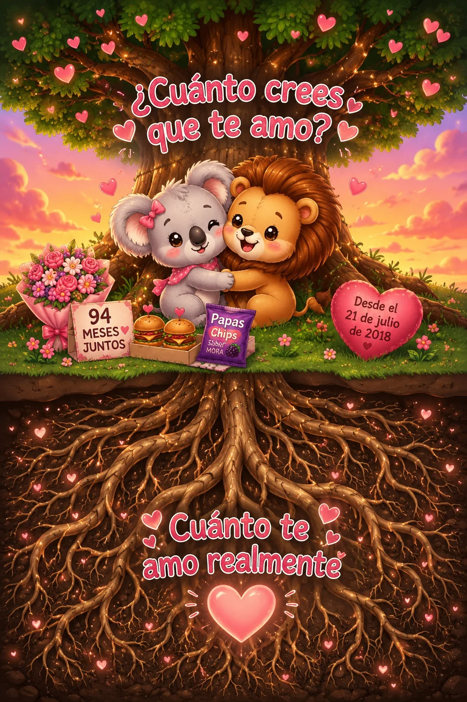

Recuerdo 01
Nuestras raíces
Un amor que no solo vive en las flores: también en todo lo que hemos aprendido, resistido y sembrado debajo de ellas.
Desde el 21 de julio de 2018
Una colección para guardar los mesiversarios, las imágenes creadas con cariño, las fotografías reales que irán llegando y todas las pequeñas cosas que solo nosotros entendemos.
Nuestra línea del tiempo
Dejé los momentos de en medio abiertos para que puedas completarlos con viajes, cumpleaños, primeras veces, metas, fotografías y recuerdos que solo ustedes conocen.
El día que se convirtió en el punto de partida de todos nuestros meses, aniversarios, aprendizajes y sueños compartidos.
Descubrimos gustos, silencios, canciones, formas de reír, diferencias y pequeños detalles que fueron construyendo un lenguaje propio.
Los personajes se volvieron un símbolo de nosotros: ternura y fuego, tierra y emoción, dos formas distintas de aprender a cuidarse.
No todo fue sencillo, pero incluso las heridas pueden convertirse en aprendizaje cuando se miran con honestidad, responsabilidad y paciencia.
Una fecha para agradecer lo vivido y reconocer que el amor también necesita hechos, cuidado, constancia y voluntad de crecer.
Aquí puedes agregar la siguiente fotografía, el siguiente viaje, una nueva canción o cualquier momento que merezca quedarse para siempre.
La banda sonora de nosotros
Cada canción conserva una emoción distinta. La playlist queda integrada para escucharla mientras recorren sus recuerdos o leen los escritos.